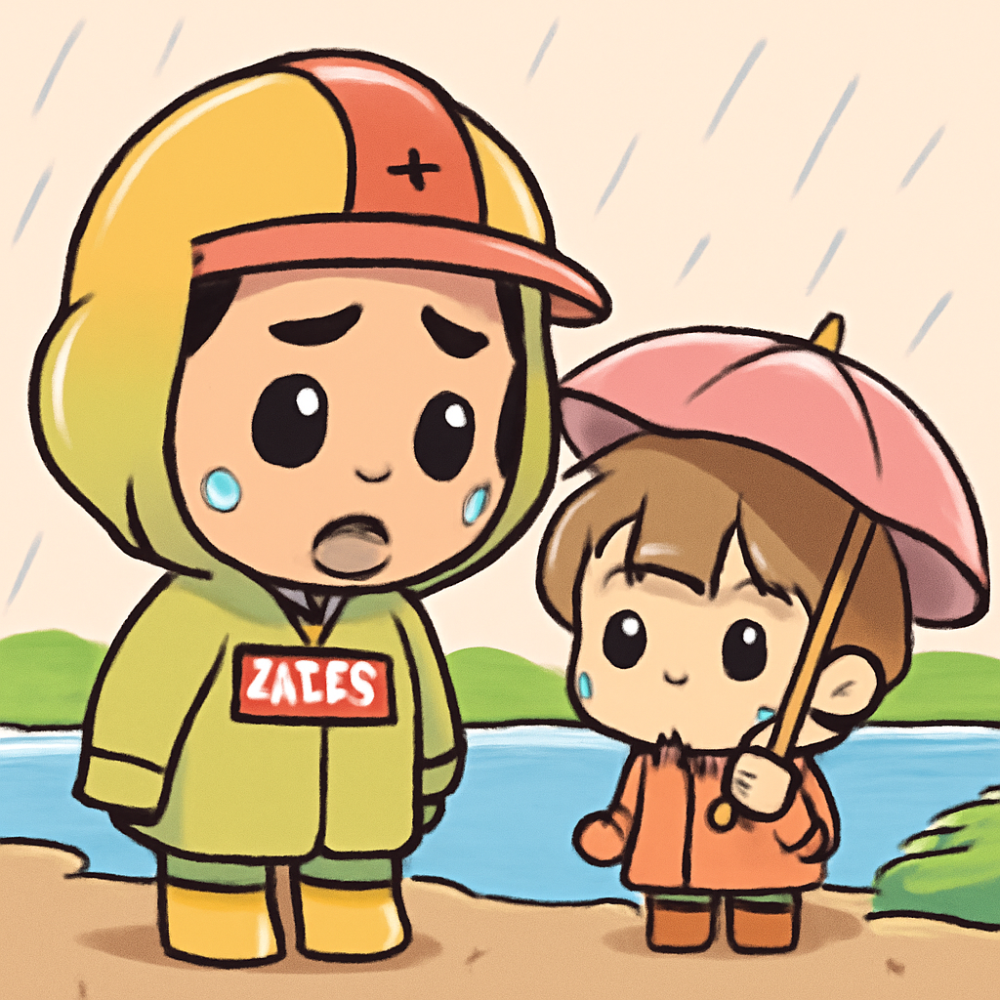
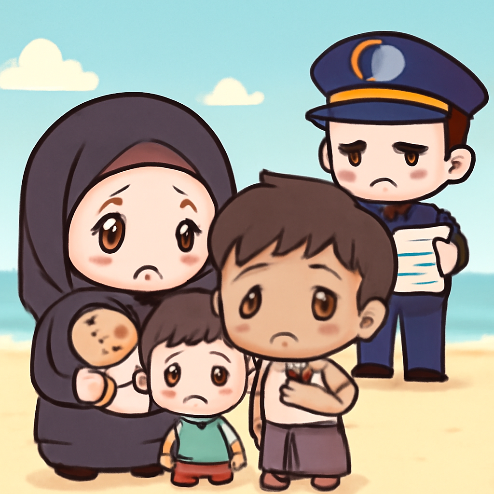

其一 · 尼泊爾 · 洪水災害規模擴大
尼泊爾洪水造成1900人失踪，救援困難重重。

尼泊爾近日遭遇嚴重洪水，失踪人數已達1900人，主要是因為水力發電項目的事故。救援工作因擔心新一波洪水而變得艱難。這場災害不僅影響了當地居民的生活，也引起了國際社會的廣泛關注。希望這次的災難能促進更好的防災措施，讓人們能夠安全地生活。
🔗 原始新聞 ↗
2026-08-29 · 以古觀今，以笑抗愁
尼泊爾洪水造成1900人失踪，救援困難重重。

尼泊爾近日遭遇嚴重洪水，失踪人數已達1900人，主要是因為水力發電項目的事故。救援工作因擔心新一波洪水而變得艱難。這場災害不僅影響了當地居民的生活，也引起了國際社會的廣泛關注。希望這次的災難能促進更好的防災措施，讓人們能夠安全地生活。
🔗 原始新聞 ↗
俄羅斯加強對北約的言辭攻勢，卻不願意直接交火。
近期，俄羅斯對北約的言辭愈加強硬，但西方官員表示，莫斯科似乎仍希望避免實際的軍事衝突。這種「混合活動」的策略意味著，俄方可能會繼續在網絡和情報等領域施壓，讓人不禁想問：這次的冷戰會不會變成冷冷的？
🔗 原始新聞 ↗
挪威國王哈拉爾去世，哈肯八世接任王位。
挪威國王哈拉爾於近日去世，國民紛紛聚集在皇宮前悼念這位深受愛戴的君主。他的兒子哈肯八世隨即昇任新國王，照著家族的座右銘「為挪威而生」來領導國家。這是一個充滿情感的過渡時期，讓許多人不禁懷念過去的美好時光。
🔗 原始新聞 ↗
阿富汗塔利班禁止女童教育，但秘密學校仍在運作。
在塔利班禁止女童上學的情況下，阿富汗一些勇敢的家庭和教師依然在暗中設立秘密學校，讓女孩們繼續接受教育。這種勇氣讓人感動，也讓人思考教育的價值與重要性。希望未來能有更多的光明，讓這些女孩們能夠自由學習。
🔗 原始新聞 ↗
馬來西亞計劃遣返羅興亞難民，引發擔憂。

馬來西亞政府近日宣布計劃將羅興亞難民遣返緬甸，這一消息讓逃離軍事統治和宗教迫害的羅興亞社區倍感恐慌。這不僅是人道危機的延續，也引發了國際社會的廣泛譴責，未來的局勢發展值得持續關注。希望這些難民能夠找到安全的歸宿。
🔗 原始新聞 ↗